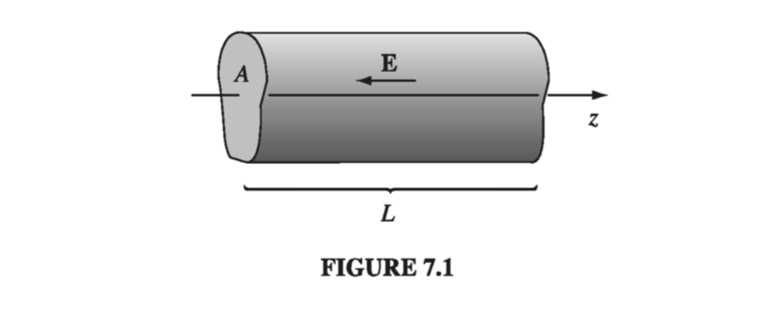
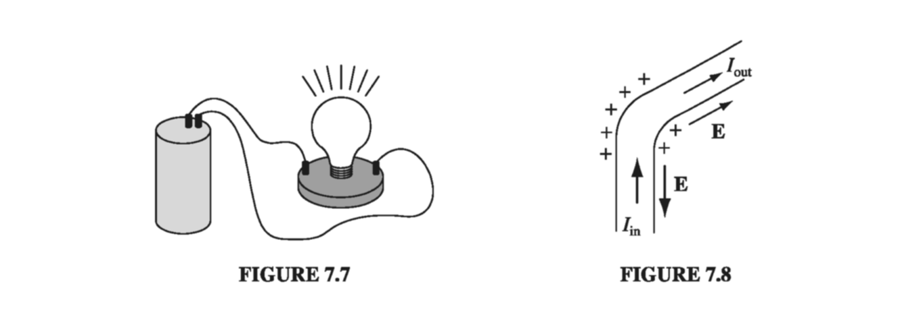
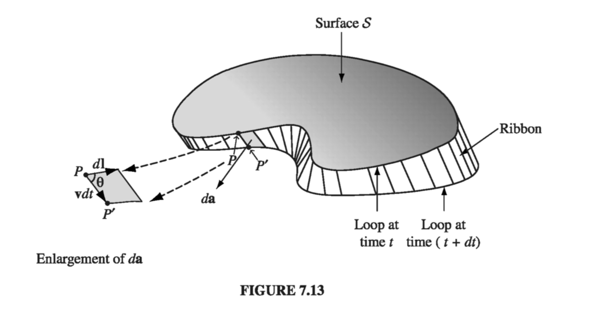

7.1 Electromotive Force#
7.1.1: Ohm’s Law#
To make a current flow, you have to push on the charges. How fast they move, in response to a given push, depends on the nature of the material. For most sub- stances, the current density \( \vec{J} \) is proportional to the force per unit charge, \( \vec{f} \):
The proportionality factor \( \sigma \) (not to be confused with surface charge) is an empirical constant that varies from one material to another; it’s called the conductivity of the medium. Actually, the handbooks usually list the reciprocal of \( \sigma \), called the resistivity: \( \rho = 1 / \sigma \) (not to be confused with charge density - I’m sorry, but we’re running out of Greek letters, and this is the standard notation). Some typical values are listed in Table 7.1. Notice that even insulators conduct slightly, though the conductivity of a metal is astronomically greater; in fact, for most purposes metals can be regarded as perfect conductors, with \( \sigma = \infty \) , while for insulators we can pretend \( \sigma = 0 \).

In principle, the force that drives the charges to produce the current could be anything - chemical, gravitational, or trained ants with tiny harnesses. For our purposes, though, it’s usually an electromagnetic force that does the job. In this case (406) becomes
Ordinarily, the velocity of the charges is sufficiently small that the second term can be ignored:
(However, in plasmas, for instance, the magnetic contribution to \( \vec{f} \) can be significant.) Equation 7.3 is called Ohm’s law, thought the physics behind it is really contained in Eq. 7.1, of which 7.3 is just a special case.
Remember back in chapter 2 when we talked about conductors and determined that \( \vec{E} = 0 \) inside a conductor? Well, that was the case for stationary charges \( ( \vec{J} = 0) \). Moreover, for perfect conductors \( \vec{E} = \vec{J} / \sigma = 0 \) even if current is flowing. In practice, metals are such good conductors that the electric field required to drive currents in them is negligible. Thus we routinely treat the connecting wires in electric circuits (for example) as equipotentials. Resistors, by contrast, are made of poorly conducting materials.
Example 7.1#
A cylindrical resistor of cross-sectional area \( A \) and length \( L \) is made from material with conductivity \( \sigma \) . (See Fig. 7.1; as indicated, the cross section need not be circular, but I do assume it is the same all the way down.) If we stipulate that the potential is constant over each end, and the potential difference between the ends is \( V \), what current flows?
As it turns out, the electric field is uniform within the wire (I’ll prove this in a moment). It follows from Eq. 7.3 that the current density is also uniform, so
Example 7.2#
Two long coaxial metal cylinders (radii \( a \) and \( b \)) are separated by material of conductivity \( \sigma \) (Fig. 7.2). If they are maintained at a potential difference \( V \), what current flows from one to the other, in a length \( L \)?

The field between the cylinders is
where \( \lambda \) is the charge per unit length on the inner cylinder. The current is therefore
(The integral is over any surface enclosing the inner cylinder.) Meanwhile, the potential difference between the cylinders is
so
As these examples illustrate, the total current flowing from one electrode to the other is proportional to the potential difference between them:
This, of course, is the more familiar version of Ohm’s law. The constant of proportionality \( R \) is called the resistance; it’s a function of the geometry of the arrangement and the conductivity of the medium between the electrodes. (In Ex. 7.1, \( R = L / \sigma A \); in Ex. 7.2, \( R = \ln (b /a ) / 2 \pi \sigma L \)) Resistance is measured in ohms (\( \Omega \)): an ohm is a volt per ampere. Notice that the proportionality between \( V \) and \( I \) is a direct consequence of Eq. 7.3: if you want to double \( V \), you simply double the charge on the electrodes - that doubles \( \vec{E} \), which (for an ohmic material) doubles \( \vec{J} \), which doubles \( \vec{I} \).
For steady currents and uniform conductivity,
and therefore the charge density is zero; any unbalanced charge resides on the surface. (We proved this long ago, for the case of stationary charges, using the fact that \( \vec{E} = 0 \); evidently, it is still true when the charges are allowed to move.) It follows, in particular, that Laplace’s equation holds within a homogeneous ohmic material carrying a steady current, so all the tools and tricks of Chapter 3 are available for calculating the potential.
Example 7.3#
I asserted that the field in exercise 7.1 is uniform. Let’s prove it
Within the cylinder \( V \) obeys Laplace’s equation. What are the boundary conditions? At the left end the potential is constant - we may as well set it equal to zero. At the right end the potential is likewise constant - call it \( V_0 \). On the cylindrical surface, \( \vec{J} \cdot \hat{n} = 0 \), or else charge would be leaking out into the surrounding space (which we take to be nonconducting). Therefore \( \vec{E} \cdot \hat{n} = 0 \) , and hence \( \frac{\partial V}{\partial n} = 0 \) . With \( V \) or its normal derivative specified on all surfaces, the potential is uniquely determined (Prob. 3.5). But it’s easy to guess one potential that obeys Laplace’s equation and fits these boundary conditions:
where \( z \) is measured along the axis. The uniqueness theorem guarantees that this is the solution. The corresponding field is
which is indeed uniform.
Contrast the enormously more difficult problem that arises if the conducting material is removed, leaving only a metal plate at either end (Fig 7.3). Evidently in the present case charge arranges itself over the surface of the wire in just such a way as to produce a nice uniform field within.
I don’t suppose there is any formula in physics more familiar than Ohm’s law, and yet it’s not really a true law, in the sense of Coulomb’s or Ampere’s; rather, it is a “rule of thumb” that applies pretty well to many substances. You’re not going to win a Nobel prize for finding an exception. In fact, when you stop to think about it, it’s a little surprising that Ohm’s law ever holds. After all, a given field \( \vec{E} \) produces a force \( q \vec{E} \) (on a charge \( q \) ), and according to Newton’s second law, the charge will accelerate. But if the charges are accelerating, why doesn’t the current increase with time, growing larger and larger the longer you leave the field on? Ohm’s law implies, on the contrary, that a constant field produces a constant current, which suggests a constant velocity. Isn’t that a contradiction to Newton’s law?
No, for we are forgetting the frequent collisions electrons make as they pass down the wire. It’s a little like this: Suppose you’re driving down a street with a stop sign at every intersection, so that, although you accelerate constantly in between, you are obliged to start all over again with each new block. Your average speed is then a constant, in spite of the fact that (save for the periodic abrupt stops) you are always accelerating. If the length of a block is \( \lambda \) and your acceleration is \( a \) , the time it takes to go a block is
and hence your average velocity is
But wait! That’s no good either! It says that the velocity is proportional to the square root of the acceleration, and therefore that the current should be proportional to the square root of the field! There’s another twist to the story: In practice, the charges are already moving very fast because of their thermal energy. But the thermal velocities \( v_{th} \) have random directions, and average to zero. The drift velocity we are concerned with is a tiny extra bit (Prob. 5.20). So the time between collisions is actually much shorter than we supposed; if we assume for the sake of argument that all charges travel the same distance \( \lambda \) between collisions, then
and therefore
If there are \( n \) molecules per unit volume, and \( f \) free electrons per molecule, each with charge \( q \) and mass \( m \), the current density is
We can’t claim that Eq. 7.6 is an accurate formula for the conductivity, but it does have all the basic ingredients, and it correctly predicts that conductivity is proportional to the density of the moving charges, and (ordinarily), decreases with increasing temperature.
As a result of all the collisions, the work done by the electrical force is converted into heat in the resistor. Since the work done per unit charge is \( V \) and the charge flowing per unit time is \( I \) , the power delivered is
This is the Joule heating law. With \( I \) in amperes and \( R \) in ohms, \( P \) comes out in watts (joules per second).
7.1.2: Electromotive Force#
If you think about a typical electric circuit - a battery hooked up to a light bulb, say (Fig. 7.7 ) - a perplexing question arises: In practice, the current is the same all the way around the loop; why is this the case, when the only obvious driving force is inside the battery? Off hand, you might expect a large current in the battery and none at all in the lamp. Who’s doing the pushing, in the rest of the circuit, and how does it happen that this push is exactly right to produce the same current in each segment? What’s more, given that the charges in a typical wire move (literally) at a snail’s pace (see Prob. 5.20), why doesn’t it take half an hour for the current to reach the light bulb? How do all the charges know to start moving at the same instant?
Answer: If the current were not the same all the way around (for instance, during the first split second after the switch is closed), then charge would be piling up somewhere, and - here’s the crucial point - the electric field of this accumulating charge is in such a direction as to even out the flow. Suppose, for instance, that the current into the bend in Fig. 7.8 is greater than the current out. Then charge piles up at the “knee,” and this produces a field aiming away from the kink. This field opposes the current flowing in (slowing it down) and promotes the current flowing out (speeding it up) until these currents are equal, at which point there is no further accumulation of charge, and equilibrium is established. It’s a beautiful system, automatically self-correcting to keep the current uniform, and it does it all so quickly that, in practice, you can safely assume the current is the same all around the circuit, even in systems that oscillate at radio frequencies.

There are really two forces involved in driving current around a circuit: the source, \( \vec{f}_S \) , which is ordinarily confined to one portion of the loop (a battery, say), and an electrostatic force, which serves to smooth out the flow and communicate the influence of the source to distant parts of the circuit:
The physical agency responsible for \( \vec{f}_S \) can be many different things: in a battery it’s a chemical force; in a piezoelectric crystal mechanical pressure is converted into an electrical impulse; in a thermocouple it’s a temperature gradient that does the job; in a photoelectric cell it’s light; and in a Van de Graaff generator the electrons are literally loaded onto a conveyor belt and swept along. Whatever the mechanism, its net effect is determined by the line integral off around the circuit:
( Because \( \oint \vec{E} \cdot \mathrm{d} \vec{l} = 0 \) for electrostatic fields, it doesn’t matter whether you use \( \vec{f} \) or \( \vec{f}_S \)). \( \mathcal{E} \) is called the electromotive force, or emf, of the circuit. It’s a lousy term, since this is not a force at all - it’s the integral of a force per unit charge. Some people would prefer the word electromotance, but emf is so established that I think we’d better stick with it.
Within an ideal source of emf (a resistanceless battery, for instance), the net force on the charges is zero (Eq. 7.1 with \( \sigma = \infty \) ), so \( \vec{E} = - \vec{f}_S \). The potential difference between the terminals (a and b) is therefore
(we can extend the integral to the entire loop because \( \vec{f}_s = 0 \) outside the source). The function of a battery, then, is to establish and maintain a voltage difference equal to the electromotive force (a 6V battery, for example, holds the positive terminal 6V above the negative terminal). The resulting electrostatic field drives current around the rest of the circuit (notice, however, that inside the battery \( \vec{f}_S \) drives current in the direction opposite to \( \vec{E} \) ).
Because it’s the line integral of \( \vec{f}_S \), \( \mathcal{E} \) can be interpreted as the work done per unit charge, by the source - indeed, in some books the electromotive force is defined this way. However, as you’ll soon see, there is some subtlety involved in this interpretation, so I prefer Eq. 7.9.
7.1.3: Motional emf#
In the last section, I listed several possible sources of electromotive force, batteries being the most familiar. But I did not mention the commonest one of all: the generator. Generators exploit motional emfs, which arise when you move a wire through a magnetic field. Figure 7.10 suggests a primitive model for a generator. In the shaded region there is a uniform magnetic field \( \vec{B} \) , pointing into the page, and the resistor \( R \) represents whatever it is (maybe a light bulb or a toaster) we’re trying to drive current through. If the entire loop is pulled to the right with speed \( v \) , the charges in segment ab experience a magnetic force whose vertical component \( q v B \) drives current around the loop, in the clockwise direction. The emf is
Notice that the integral you perform to calculate \( \mathcal{E} \) (Eq. 7.9 or 7.11) is carried out at one instance in time - take a “snapshot” of the loop, if you like, and work from that. Thus \( \mathrm{d} \vec{l} \), for the segment ab in Fig 7.10, points straight up, even though the loop is moving to the right. You can’t quarrel with this - it’s simply the way emf is defined - but it’s important to be clear about it.
In particular, although the magnetic force is responsible for establishing the emf, it is not doing any work - magnetic forces never do work. Who, then, is supplying the energy that heats the resistor? Answer: The person who’s pulling on the loop. With the current flowing, the free charges in segment ab have a vertical velocity (call it \( \vec{u} \) ) in addition to the horizontal velocity \( \vec{v} \) they inherit from the motion of the loop. Accordingly, the magnetic force has a component \( q u \vec{B} \) to the left. To counteract this, the person pulling on the wire must exert a force per unit charge
to the right (Fig 7.11). This force is transmitted to the charge by the structure of the wire.
Meanwhile, the particle is usually moving in the direction of the resultant velocity \( \vec{w} \), and the distance it goes is \( (h / \cos \theta) \). The work done per unit charge is therefore
(\( \sin \theta \) coming from the dot product). As it turns out, then, the work done per unit charge is exactly equal to the emf, though the integrals are taken along entirely different paths (Fig. 7.12), and completely different forces are involved. To calculate the emf, you integrate around the loop at one instant, but to calculate the work done you follow a charge in its journey around the loop; \( f_{pull} \) contributes nothing to the emf, because it is perpendicular to the wire, whereas \( f_{mag} \) contributes nothing to work because it is perpendicular to the motion of the charge.

There is a particularly nice way of expressing the emf generated in a moving loop. Let \( \Phi \) be the flux of \( \vec{B} \) through the loop:
For the rectangular loop in Fig 7.10,
As the loop moves, the flux decreases:
(The minus sign accounts for the fact that dx/dt is negative.) But this is precisely the emf (Eq. 7.11); evidently the emf generated in the loop is minus the rate of change of flux through the loop:
This is the flux rule for motional emf.
Apart from its delightful simplicity, the flux rule has the virtue of applying to non-rectangular loops moving in arbitrary directions through nonuniform magnetic fields; in fact, the loop need not even maintain a fixed shape.
Tip
Proof. Figure 7.13 shows a loop of wire at time \( t \) , and also a short time \( \mathrm{d} t \) later. Suppose we compute the flux at time \( t \) , using surface \( S \) , and the flux at time \( t + \mathrm{d} t \) , using the surface consisting of \( S \) plus the “ribbon” that connects the new position of the loop to the old. The change in flux, then, is
 Focus your attention on point \( P \): in time \( \mathrm{d} t \) it moves to \( P' \). Let \( \vec{v} \) be the velocity of the wire, and \( \vec{u} \) the velocity of a charge down the wire; \( \vec{w} = \vec{v} + \vec{u} \) is the resultant velocity of a charge at \( P \). The infinitesimal element of area on the ribbon can be written as
(see inset in Fig 7.13). Therefore
Since \( \vec{w} = ( \vec{v} + \vec{u}) \) and \( \vec{u} \) is parallel to \( \mathrm{d} \vec{l} \), we can just as well write
Now, the scalar triple product can be rewritten:
so
But \( (\vec{w} \times \vec{B}) \) is the magnetic force per unit charge, \( \vec{f}_{mag} \), so
and the integral of \( \vec{f}_{mag} \) is the emf:
There is a sign ambiguity in the definition of emf (Eq. 7.9): Which way around the loop are you supposed to integrate? There is a compensatory ambiguity in the definition of flux (Eq. 7.12): Which is the positive direction for \( \mathrm{d} \vec{a} \) ? In applying the flux rule, sign consistency is governed (as always) by your right hand: If your fingers define the positive direction around the loop, then your thumb indicates the direction of \( \mathrm{d} \vec{a} \). Should the emf come out negative, it means the current will flow in in the negative direction around the circuit.

The flux rule is a nifty short-cut for calculating motional emfs. It does not contain any new physics - just the Lorentz force law. But it can lead to error or ambiguity if you’re not careful. The flux rule assumes you have a single wire loop - it can move, rotate, stretch, or distort (continuously), but beware of switches, sliding contacts, or extended conductors allowing a variety of current paths. A standard “flux rule paradox” involves the circuit in Figure 7.14. When the switch is thrown (from a to b) the flux through the circuit doubles, but there’s no motional emf (no conductor moving through a magnetic field), and the ammeter (A) records no current.
Example 7.4#
A metal disk of radius \( a \) rotates with angular velocity \( \omega \) about a vertical axis, through a uniform field \( \vec{B} \), pointing up. A circuit is made by connecting one end of a resistor to the axle and the other end to a sliding contact, which touches the outer edge of the disk (Fig 7.15). Find the current in the resistor

The speed of a point on the disk at a distance \( s \) from the axis is \( v = \omega s \), so the force per unit charge is \( \vec{f}_{mag} = \vec{v} \times \vec{B} = \omega s B \hat{s} \). The emf is therefore
and the current is
Example 7.4 (the Faraday disk, or Faraday dynamo) involves a motional emf that you can’t calculate (at least, not directly) from the flux rule. The flux rule assumes the current flows along a well-defined path, whereas in this example the current spreads out over the whole disk. It’s not even clear what the “flux through the circuit” would mean in this context.
Even more tricky is the case of eddy currents. Take a chunk of aluminum (say), and shake it around in a nonuniform magnetic field. Currents will be generated in the material, and you will feel a kind of “viscous drag” - as though you were pulling the block through molasses (this is the force I called \( \vec{f}_{pull} \) in the discussion of motional emf). Eddy currents are notoriously difficult to calculate, but easy and dramatic to demonstrate. You may have witnessed the classic experiment in which an aluminum disk mounted as a pendulum on a horizontal axis swings down and passes between the poles of a magnet (Fig. 7.16a). When it enters the field region it suddenly slows way down. To confirm that eddy currents are responsible, one repeats the demonstration using a disk that has many slots cut in it, to prevent the flow of large-scale currents (Fig. 7.16b). This time the disk swings freely, unimpeded by the field.